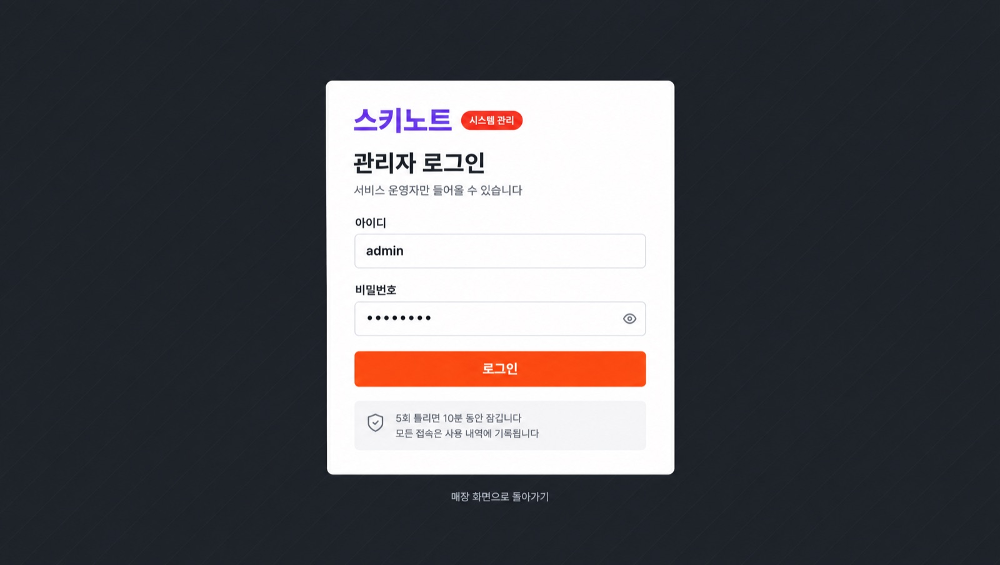
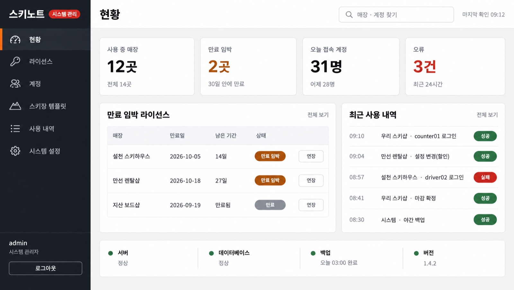
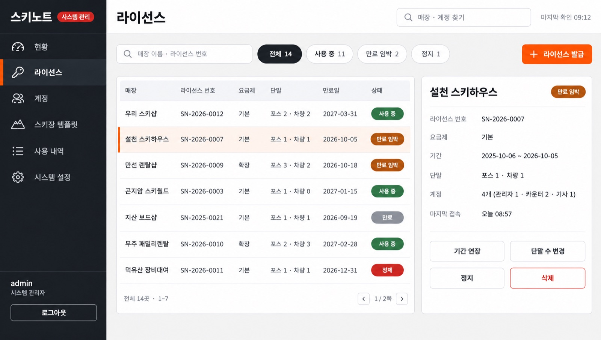
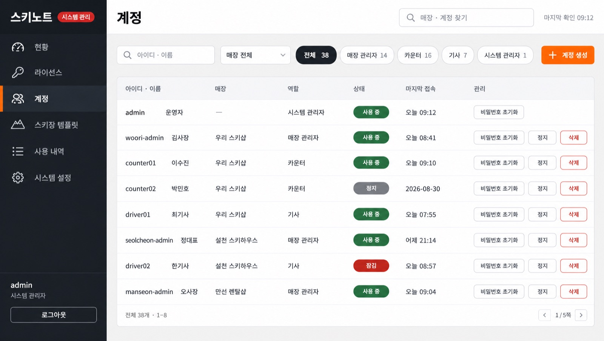
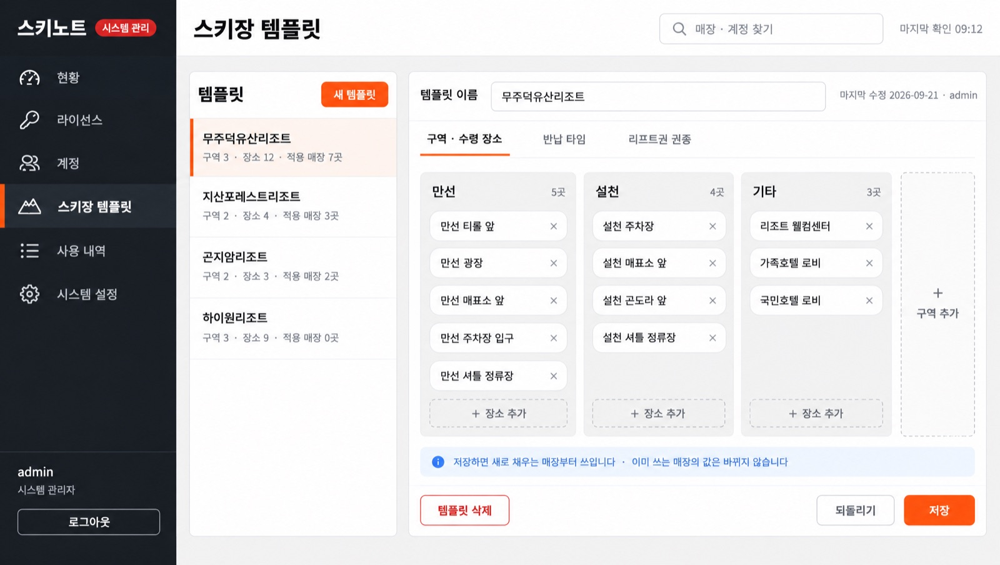
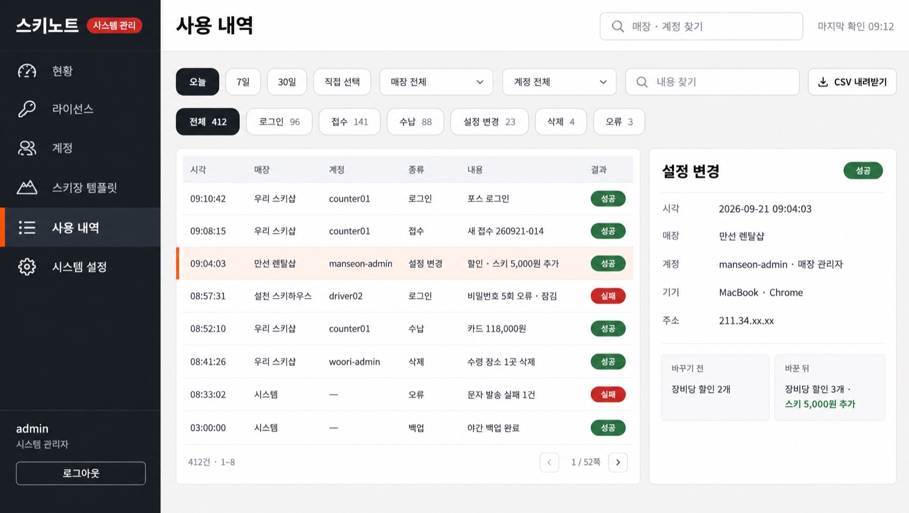
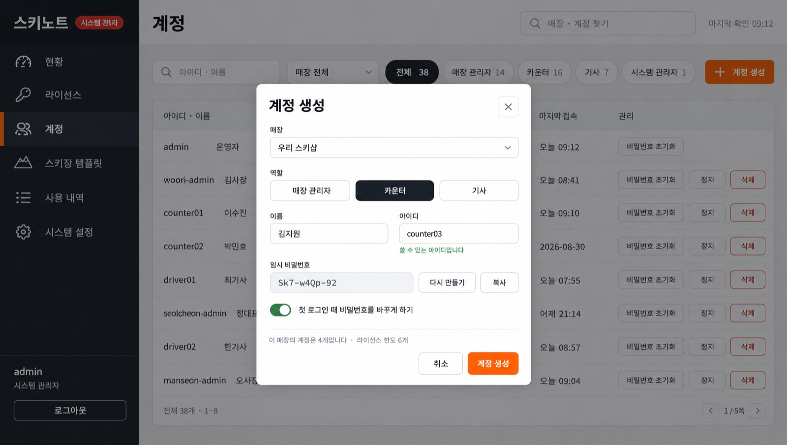
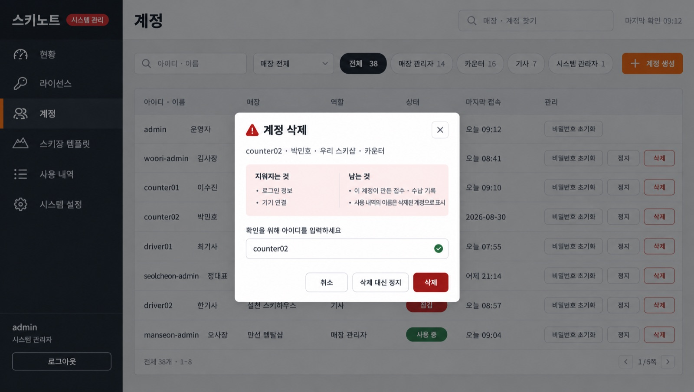

A01 · 관리자 로그인(숨은 진입 화면)
통과

셸 없는 어두운 배경 + 흰 카드. `스키노트` · 빨간 `시스템 관리` 표시, 아이디 · 비밀번호 · `로그인`, 잠금 · 기록 안내, 아래 `매장 화면으로 돌아가기`. 숨은 진입 방법은 화면에 적지 않는다.
A02 · 현황(대시보드 · 셸 기준 화면)
통과 · 셸 기준 화면

어두운 사이드바(메뉴 6개 · 활성 표시는 주황 막대) + 흰 헤더(제목 · 찾기 · 마지막 확인). 숫자 카드 4개, `만료 임박 라이선스` 표, `최근 사용 내역`, 아래 시스템 상태 줄. 나머지 화면의 참조로 사용.
A03 · 라이선스 관리
통과(메모) · 참조 A02

찾기 + 상태 칩 + `라이선스 발급`, 표 7행 + 쪽수, 오른쪽에 고른 매장 상세와 `기간 연장` · `단말 수 변경` · `정지` · 빨간 `삭제`. 메모: 마지막 행의 상태 알약이 `정제`로 그려짐(`정지`의 오기 · 칩과 버튼은 바름) — 기록만.
A04 · 계정 관리
통과 · 참조 A02

찾기 · 매장 고르기 · 역할 칩 · `계정 생성`, 표 8행(아이디 · 이름 · 매장 · 역할 · 상태 · 마지막 접속), 행마다 `비밀번호 초기화` · `정지` · 빨간 `삭제`(admin 행은 초기화만).
A05 · 스키장 템플릿 관리
통과 · 참조 A02

왼쪽 템플릿 목록(적용 매장 수) + `새 템플릿`, 오른쪽 편집기: 이름, 탭 셋(`구역 · 수령 장소` · `반납 타임` · `리프트권 권종`), 구역마다 장소 칩과 `+ 장소 추가`, `+ 구역 추가`, 안내 줄, `템플릿 삭제` · `되돌리기` · `저장`.
A06 · 사용 내역(로그) 조회
통과 · 참조 A02

기간 칩 · 매장 · 계정 · 내용 찾기 · `CSV 내려받기`, 종류 칩(건수), 표 8행 + 쪽수, 오른쪽 상세에 시각 · 매장 · 계정 · 기기 · 주소와 `바꾸기 전 / 바꾼 뒤`.
A07 · 팝업 · 계정 생성
통과 · 참조 A04

계정 화면 위 창: 매장 · 역할 선택 버튼 · 이름 · 아이디(쓸 수 있는지 표시) · 임시 비밀번호(`다시 만들기` · `복사`) · 첫 로그인 때 비밀번호 바꾸기 · 라이선스 한도 안내. 어두운 배경의 작은 오탈자는 배경이라 기록만.
A08 · 팝업 · 삭제 확인
통과 · 참조 A04

되돌릴 수 없는 삭제: `지워지는 것 / 남는 것`을 나눠 보이고 아이디를 직접 입력해야 빨간 `삭제`가 눌린다. `삭제 대신 정지`를 옆에 둔다. 주황 버튼 없음.